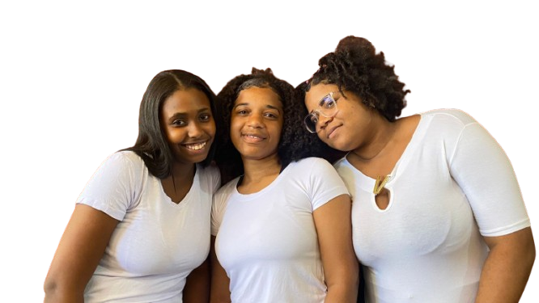
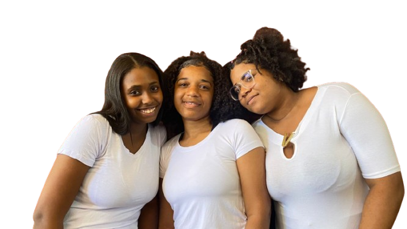

Sobre Nós
O movimento Consciência Negra visa promover a reflexão sobre a história e cultura afro-brasileira, abordando questões de igualdade, respeito e valorização da diversidade cultural. Conheça mais sobre a nossa missão e valores!
Missão
Promover a igualdade racial e a conscientização sobre a história e cultura afro-brasileira, oferecendo educação, arte e cultura para fortalecer a identidade e o empoderamento negro.
Visão
Ser referência na promoção de políticas e ações afirmativas para o fortalecimento da cultura negra e o combate ao racismo em todas as suas formas.
Valores
Respeito, igualdade, empoderamento, inclusão e solidariedade são os pilares que norteiam as nossas ações em prol da valorização da cultura negra e da promoção da justiça social.
A Nossa História
Fundada em 2005, a Consciência Negra nasceu com o propósito de combater o racismo e promover a educação sobre a história do povo negro no Brasil. Ao longo dos anos, realizamos diversas ações culturais, palestras, workshops e eventos que impactaram milhares de pessoas.
Acreditamos que a construção de um Brasil mais justo passa pela valorização da diversidade cultural e pela promoção da igualdade de direitos para todos os cidadãos.
Momentos Importantes

.png) 

Conheça a Nossa Equipe

Enzo Reis
Coordenadora de Projetos

Evelyb Lopes
Educador e Palestrante

Beatriz
Assistente de Comunicação